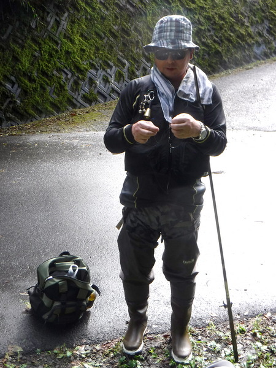
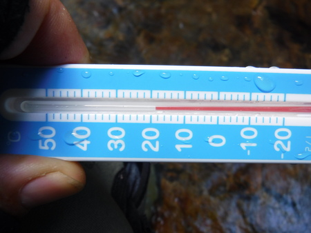
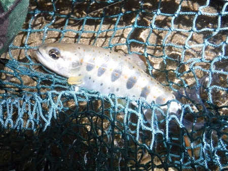
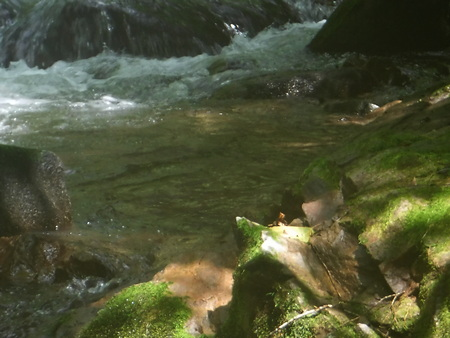
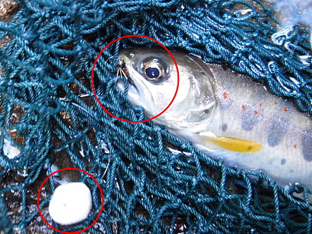
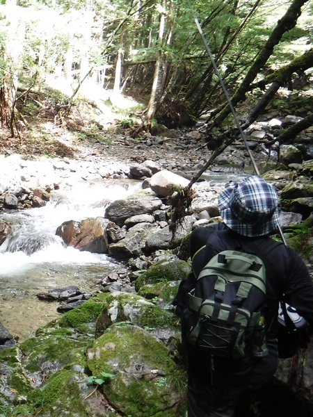
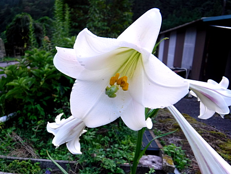

釣行日誌 故郷編
2023/09/09 夏の終わりの百合の花
今日はA先輩を甘言で誘い出し、アパート前まで朝６時に迎えに来て頂く。県境向こうの山岳渓流を目指すのだ。
村の雑貨・食料品店にて入漁券を買い、最近はクマの出没が無いかどうか、念入りに伺う。一応クマ撃退用スプレーは持っているが、とっさの出会いでホルスターから缶を取りだし、わずか５～６秒の噴射時間で奴の顔に有効な一撃を加えるには、海兵隊に入るくらいの訓練を積まねばダメだろう。まぁ、気休めかな.....
川沿いの狭い道路を走っていると、不思議と先行者の車が無い。『珍しいこともあるもんだなぁ.....』と思っていると、目的地に着いた。
先輩の高級車を、安全な位置に停め、いそいそと身支度をする。この時間が一番楽しかったりして。(笑)

支度が出来たので、農道を降りてゆくと、何とビックリ車が１台空き地に停めてある。
『やられた！』(笑)
動揺を隠しつつ、橋の上から付近をそっと伺うと、比較的若い人が２人、上流側の淵で、餌釣りをしていた。若い人の餌釣りを見るのは珍しいので驚いた。
気を取り直し、とりあえず、去年のA先輩爆釣ポイントへ行く。
水況はまずまずだが、何のアタリも無い。僕のルアーにも反応無し。水温はちょうど良いのになしのつぶて。

きっと、この場所は例の２人組が攻めたのだろう。仕方が無いので、車で上流へ移動し、大橋の部落から入る。
A先輩がじっくり攻めているので、先行させてもらい、フライでペース良く釣り上がる。ちょっとした巻き返しの深みで小物がドライフライに出た。小物とは言え、天然アマゴはさすがに美しい。


今度はニンフの仕掛けをセットし、ビーズヘッドのフェザントテールで探っていると、チビッ子がインジケーターとして使っている直径2cmの発泡スチロール球に突っかかって来た。
こいつ、恐い物知らずだな.....(笑) もう一度流すと、大きな目印がストンと沈んだ。それなりに水況が良いので、喰い気が立っていたのだろう。

それから結構長い時間釣り上がり、先輩が追いつくのを待って、２人で釣り上がる。さすがに長年の修練で培われた、先輩の木化け・石化けの術は見事である。

午後四時に竿をたたんで杣道をたどって林道へ登る。
大橋に戻ると、橋詰めの民家脇に、百合の花が綺麗に咲いていた

車を停めたそばで、濡れて重い服やウェーディングシューズを脱いでいると、近所の家のおばあさんが現れたのでしばし歓談する。街へ出ていった子供達、たまに遊びに来るお孫さんたちのこと。独り暮らしではあるが、何とか身体が丈夫なので、気楽にすごしていると言ってニコッと笑った。
母も生きていれば、こんなおばあちゃんになっていただろうか？
帰途、旧街道沿いの老舗肉屋で、鶏の親鳥（廃鶏）の硬い肉のニンニク漬けを買い、一袋は先輩に御礼のプレゼントとした。
流石に高級車のドライブ、乗せてもらうのは楽ちんで、明るいうちに豊橋に着いた。夕食は自炊となり、チキンのキャベツ炒めが美味しかった。
もうじき渓流釣りシーズンも閉幕だなぁ。
釣行日誌 故郷編 目次へ
サイトマップ
ホームへ
お問い合わせ